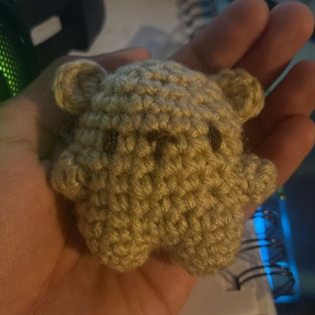
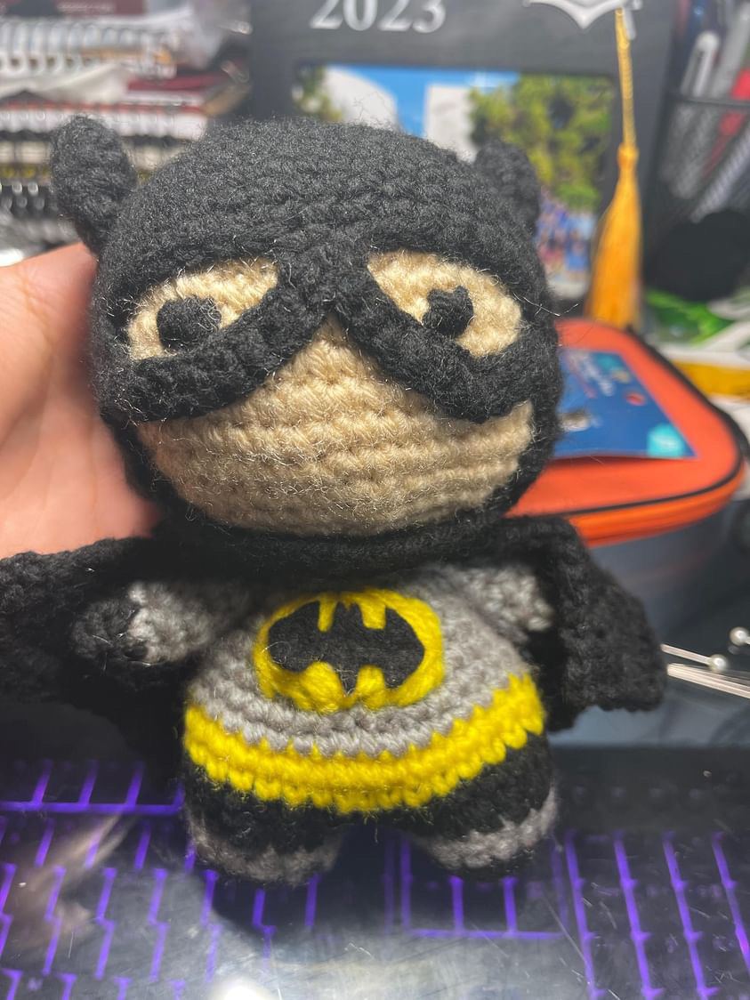

Selected Work
A few representative plush projects that show my range in size, style, and detail.
Mini Bear Set

A stylized hero plush with costume details and color blocking, showing how I adapt recognizable characters into soft crochet form.
Shero Character Plush

A stylized hero plush with costume details and color blocking, showing how I adapt recognizable characters into soft crochet form.
Custom Coraline-Inspired Plush

A full-size custom commission with clothing, hair, and accessories, highlighting pattern customization and layered details.